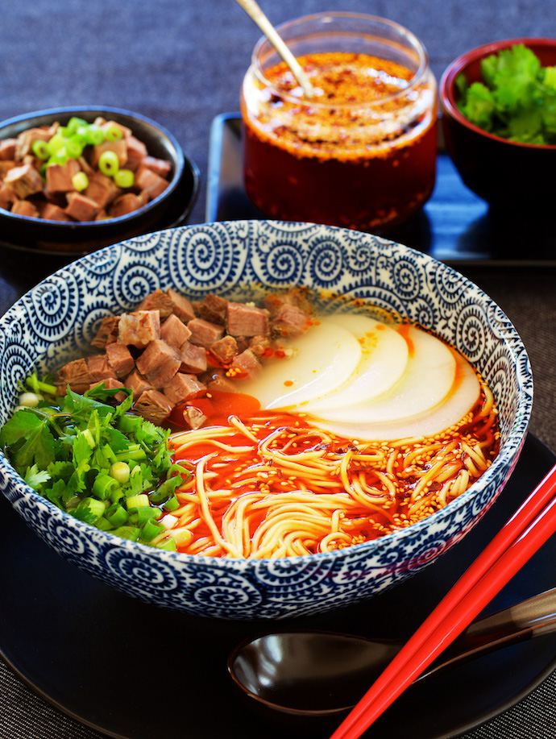
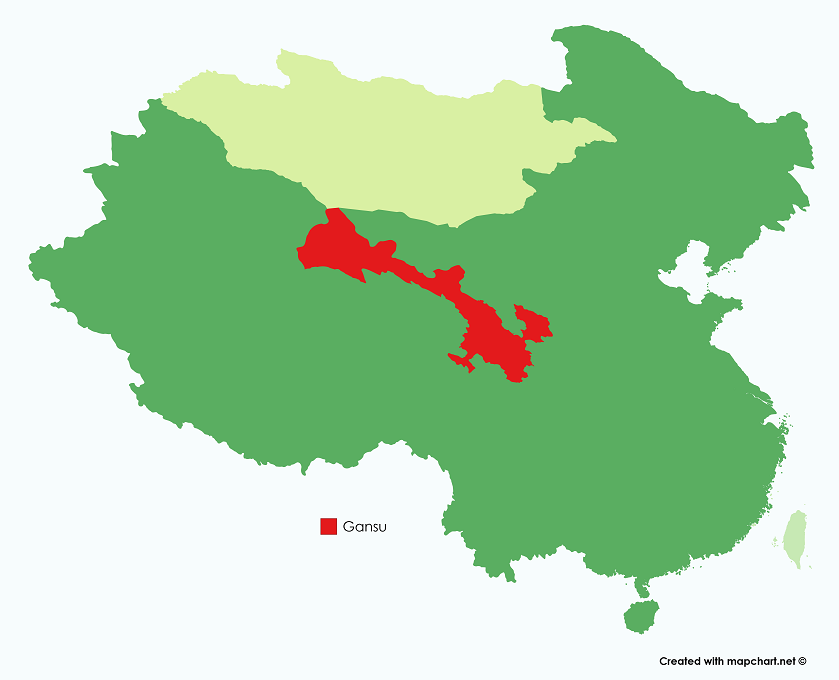

At Cuinese Cuisine App, we ensure you that only AUTHENTIC recipes that
represent the values of Chinese traditions can be featured.
Lanzhou Beef Soup Noodles
蘭州牛肉麵

Introduction
Consisting of a flavorful broth, shaved beef, tender radishes, herbs, chili oil, and chewy noodles, Lanzhou Beef Noodle Soup has the majority vote for favorite bowl of noodles among 1.4 billion very culinarily-conscious citizens.
Geography and Origin
Gansu is an interesting place as it is the doorway of the silkroad of China.
There have been a blending of culture taking at this place for centuries.
See the location of Gansu in the map below:

Ingredients
The main ingredients are
4 lbs beef or pork soup bones
2 1/4 lbs 1 kg beef shank
½ of a whole roasting chicken
10 cups water
4 cups about 1 liter chicken stock
Spice mix
Salt (to taste)
1/2 of a small Chinese radish (quartered and thinly sliced)
1 pound fresh or dried white noodles (they can really be any thickness, as long as they are wheat-based noodles rather than rice noodles, and have a nice chew when cooked)
Rinse the soup bones and pat dry. Roast them on a baking sheet at 400 degrees for 45 minutes. Bring a large pot of water to a boil, and add the beef shank and the chicken (or chicken carcass) to the pot. Bring everything to a boil again. Once boiling, remove the shank and the chicken, discard the water, and clean the pot. This process gets rid of any impurities, and will give your broth a cleaner flavor.
Put the beef shank and chicken back into the pot along with the roasted bones, 10 more cups of water, and 4 cups chicken stock. Make the spice mix by combining all ingredients and tying them tightly in cheese cloth with a bit of kitchen string. Add this to the pot as well and season with salt. Bring everything to a boil.
Once boiling, turn down the heat to low and let everything simmer for about 2 hours. After 2 hours have elapsed, remove the beef shank and set aside. Add the sliced radish and continue simmering for another hour. After that, use tongs to pick out and discard the spice pouch, chicken, and soup bones. Taste the broth for salt and adjust the seasoning if needed. The soup base is ready.
While all that is happening, you can take the time to make your chili oil. In a small pot, add the oil, star anise, cinnamon, and Sichuan peppercorns. Place the pot over very low heat and let everything toast together slowly for 15 minutes. Take care not to burn the spices. Use a slotted spoon to remove the spices, and turn off the heat. Let the oil cool for about 5 minutes, and then add the chili flakes. Slowly toast these in the hot oil until very fragrant (it should
almost smell like popcorn), and very red. Stir in the salt and sugar.
Once the broth and chili oil are done, cook the noodles in a separate pot according to the package instructions. Divide the noodles among 6 bowls. Slice the cooled beef shank into thin slices, and fan them out over the noodles. To finish, add a big ladle of broth and radishes, a spoonful of hot chili oil, and a handful each (don't be shy) of chopped scallion and cilantro.